Operating Documentation
Direction 5114045-800, Rev# 10
LightSpeed 4.X Service Information (Advanced)
Operating Documentation |
| Required Persons | Preliminary Reqs | Procedure | Finalization |
|---|---|---|---|
| 1 |
There are two (2) levels of Pegasus diagnostics:
Low level board diagnostics - run from the service browser with applications shutdown. Used to test the functionality of the Pegasus board specifically.
High level Recon Data Path tests - run from the service desktop at applications level. Tests the ability of the Pegasus board to communicate and operate with the rest of the system.
On the Service Desktop page, click [UTILITIES] (circular button at the top menu bar), then click Application Shutdown in the left menu column. Wait for the “Attention” window to disappear and then open a shell. Within that shell, execute the following command to start the service browser (See Illustration 1):
> service_browser <ENTER>
Illustration 1: Initiating the Service browser

With the service browser displayed, select the Diagnostics TAB (See Illustration 2).
Illustration 2: Service Browser - Diagnostic TAB
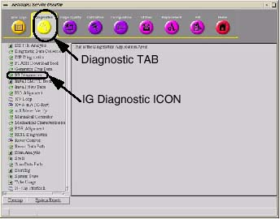
Within the Diagnostic TAB, select the IG Diagnostic ICON in the file list menu on the left, by clicking on it. The IG Board level Diagnostic screen appears. (See Illustration 3)
Illustration 3: IG Board Level Diagnostic Screen
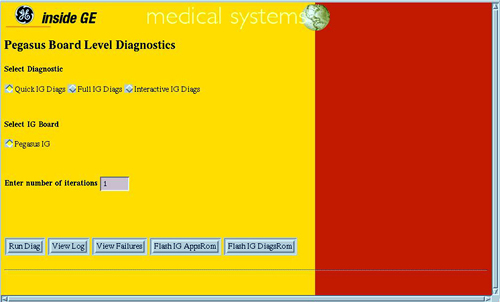
Select either Quick IG Diags or Full IG Diags and Enter number of iterations.
Select [RUN DIAG] . A shell window will open and the results of each test is displayed on-screen. See Illustration 5 and Illustration 6. When testing has completed, close the shell window before attempting to run any other tests.
To exit testing, close all diagnostic windows. See Illustration 8.
On rare occasions, diagnostic tests may fail to execute or an error message will be displayed. Preform the following
Close all open shell windows created by executing [RUN DIAG] . Diagnostics will not run with multiple windows opened by Run Diag.
Shutdown console, restart and then re-run IG Diagnostics. On rare occasions, run diags cannot allocate the OS system resources necessary to execute diagnostics. When this occurs, you will see multiple PTY (pseudo TTY) errors reported.
None of the items identified above are related to the operation of the PEG-IG board. They’re only related to the operation of the diagnostic tool itself.
[RUN DIAG] is used to initiate the diagnostics chosen.
Select [RUN DIAG] to begin test execution according to the parameters selected. First, select the diagnostic. Next, select the IG Board to be tested, Finally, enter the number of test iterations (1 is the default) desired.
Illustration 4: Board Level Diagnostic Parameters
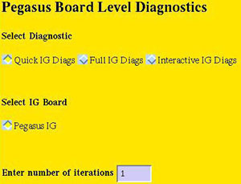
A new window is displayed (spawned) with output from the test selected displayed.
Illustration 5: Quick Diags Screen

Illustration 6: Full Diags Screen
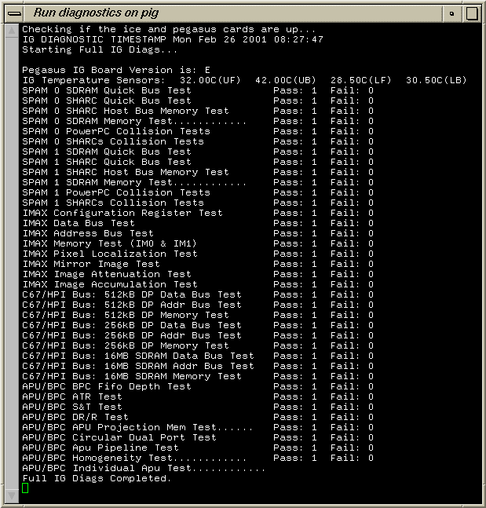
Illustration 7: Interactive Diags Screen

Always close the test window after testing has completed. Double-click the square box in the upper left corner of the window with the minus sign.
Illustration 8: Close Window ICON
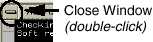
[VIEW LOG] displays the entire contents of the pig.log, located in /usr/g/service/log directory. The PIG.LOG cannot be viewed using the system browser tool located in the service desktop.
Illustration 9: View Log Screen
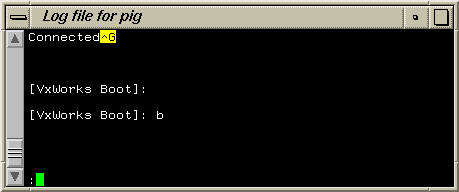
[VIEW FAILURES] displays all the IG failures recorded in the pig.log. Located in /usr/g/service/log directory.
Illustration 10: View Failures Screen
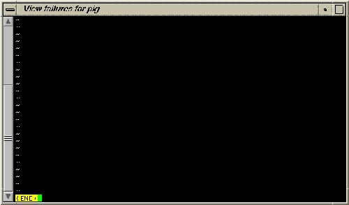
[FLASH IG APPSROM] & [FLASH IG DIAGSROM] is only use when instructed. Designed for manufacturing use only.
Illustration 11: Flash IG AppsRom Screen
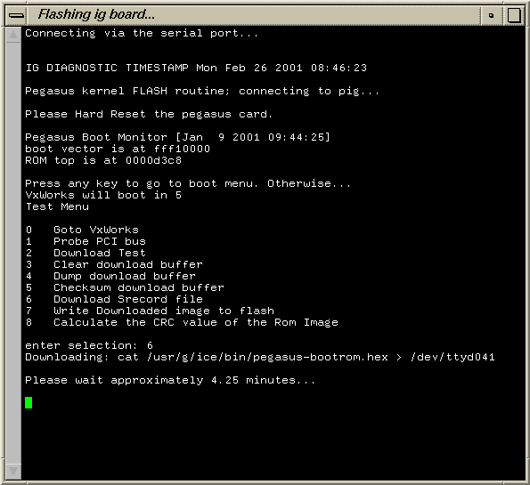
Illustration 12: Flash IG DiagsRom Screen
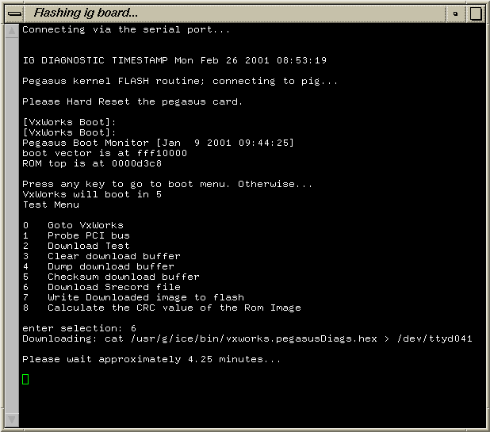
CT Scanner applications must be up and running. If not, click on [APPLICATION STARTUP] , in the upper right corner of the screen. It takes about 3 minutes for applications to start. Applications are up when the a dialog window says that you need to run fastcal. Click [OK] .
Go to the Service Desktop and select the Diagnostics TAB (See Illustration 2).
Illustration 13: Diagnostic TAB Screen
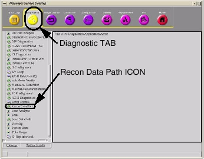
In the menu column on the left side of the Service Desktop page, click [RECON DATA PATH] icon (toward the bottom of the list). This brings up the Auto Recon page (10-15 sec. to appear).
Illustration 14: Recon Data Path Diagnostic Screen
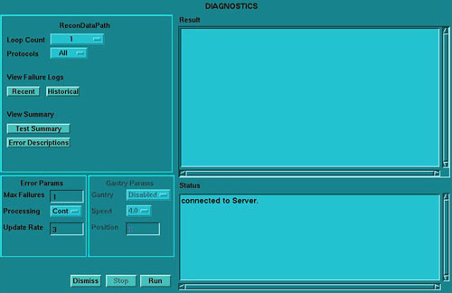
When the Recon Data Path page comes up, select a loop count of: 5, select [ALL] tests, then click [RUN] . This runs five loops of all tests; each loop generates 20 images, for a total of 100 images. This test checks the image output by comparing checksums of each image. (takes about 4 minutes to run).
When complete, click [DISMISS] .
No finalization required.